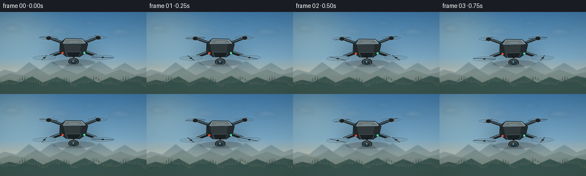
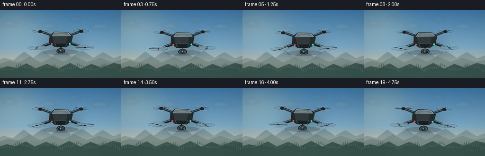
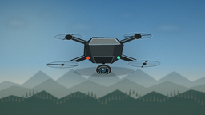

CODING AGENTS AS PIXEL WORLD MODELS
traex/GPT-5.6-Sol · instance_preservation_0040
点击播放 · 原生 RGB 像素
逐轮保存的候选
回放视频、检查图与代码变化。
每份候选均可单独播放。实际图片检查记录在下方工具轨迹中。
候选 01播放与检查图
点击播放 · 原生 RGB 像素


展开代码变化
--- 上一保存版本
+++ 本次保存版本
@@ -0,0 +1,209 @@
+from pathlib import Path
+import math
+import numpy as np
+from PIL import Image, ImageDraw, ImageFilter
+import artifact_io
+
+# Procedural text-to-video render: all geometry, lighting and motion are generated here.
+CASE_DIR = Path(__file__).resolve().parent
+W, H, N = 256, 144, 20
+FPS = 4.0
+SS = 4
+RW, RH = W * SS, H * SS
+rng = np.random.default_rng(7319)
+
+# Fixed cloud sprites preserve cloud identity while the camera drifts.
+clouds = [
+ (21, 29, 25, 8, 38), (61, 18, 18, 6, 24), (104, 34, 30, 8, 30),
+ (159, 20, 24, 7, 25), (211, 35, 34, 9, 33), (246, 18, 20, 5, 19),
+]
+
+# Stable fine grain/noise, used subtly to avoid flat gradients.
+grain = rng.normal(0, 1, (H, W)).astype(np.float32)
+
+def smooth_poly(draw, pts, fill, outline=None, width=1):
+ pts = [(int(x*SS), int(y*SS)) for x, y in pts]
+ draw.polygon(pts, fill=fill)
+ if outline:
+ draw.line(pts + [pts[0]], fill=outline, width=max(1,int(width*SS)), joint='curve')
+
+def sky_background(fi):
+ t = fi / (N - 1)
+ yy = np.linspace(0, 1, RH, dtype=np.float32)[:, None]
+ top = np.array([62, 119, 165], np.float32)
+ mid = np.array([142, 184, 205], np.float32)
+ horizon = np.array([229, 196, 151], np.float32)
+ c1 = top[None,None,:]*(1-np.minimum(yy/0.72,1))[...,None] + mid[None,None,:]*np.minimum(yy/0.72,1)[...,None]
+ q = np.maximum((yy-0.55)/0.45, 0)[...,None]
+ arr = c1*(1-q) + horizon[None,None,:]*q
+ arr = np.repeat(arr, RW, axis=1)
+ # warm sunlight from upper left
+ Y, X = np.mgrid[0:RH, 0:RW]
+ sx, sy = 28*SS, 28*SS
+ glow = np.exp(-(((X-sx)/(67*SS))**2 + ((Y-sy)/(49*SS))**2))[:,:,None]
+ arr += glow*np.array([34, 22, 4], dtype=np.float32)
+ # very subtle exposure breathing from natural haze
+ arr += 1.1*math.sin(t*math.pi*1.2)
+ return Image.fromarray(np.uint8(np.clip(arr, 0, 255)), 'RGB')
+
+def draw_cloud_layer(base, fi):
+ t = fi / (N - 1)
+ layer = Image.new('RGBA', (RW, RH), (0,0,0,0))
+ d = ImageDraw.Draw(layer, 'RGBA')
+ shift = -2.1*t
+ for idx, (cx, cy, cw, ch, alpha) in enumerate(clouds):
+ cx = cx + shift*(0.5 + (idx%3)*0.18)
+ # multi-lobed wispy cloud
+ col = (244, 245, 238, alpha)
+ lobes = [(-.35,.10,.43,.65), (-.12,-.18,.42,.90), (.15,-.08,.48,.78), (.40,.15,.35,.56)]
+ for ox, oy, wx, hy in lobes:
+ box = ((cx+ox*cw-wx*cw/2)*SS, (cy+oy*ch-hy*ch/2)*SS,
+ (cx+ox*cw+wx*cw/2)*SS, (cy+oy*ch+hy*ch/2)*SS)
+ d.ellipse(tuple(map(int,box)), fill=col)
+ d.ellipse((int((cx-cw*.53)*SS), int((cy-ch*.03)*SS), int((cx+cw*.55)*SS), int((cy+ch*.42)*SS)), fill=col)
+ layer = layer.filter(ImageFilter.GaussianBlur(3.5*SS))
+ return Image.alpha_composite(base.convert('RGBA'), layer)
+
+def draw_landscape(base, fi):
+ t = fi/(N-1)
+ # tiny stabilized camera drift creates subtle parallax while preserving scene.
+ dx_far = -1.4*t
+ dx_near = -3.0*t
+ layer = Image.new('RGBA', (RW,RH), (0,0,0,0))
+ d = ImageDraw.Draw(layer, 'RGBA')
+ # Distant range
+ far = [(-15,111),(8,101),(28,106),(51,88),(70,101),(91,86),(109,99),(131,82),
+ (151,99),(174,86),(197,101),(218,89),(240,102),(271,91),(271,145),(-15,145)]
+ far = [(x+dx_far,y) for x,y in far]
+ smooth_poly(d, far, (91,122,132,122))
+ # illuminated ridge behind
+ ridge = [(-15,120),(18,107),(40,111),(63,98),(86,111),(111,100),(135,109),(158,98),
+ (184,110),(210,101),(236,110),(271,102),(271,145),(-15,145)]
+ ridge = [(x+dx_far*1.4,y) for x,y in ridge]
+ smooth_poly(d, ridge, (82,111,113,165))
+ # near dark forest hills
+ near = [(-15,129),(16,119),(35,123),(56,113),(75,124),(99,114),(123,124),
+ (148,112),(171,124),(193,114),(214,122),(240,112),(271,119),(271,145),(-15,145)]
+ near = [(x+dx_near,y) for x,y in near]
+ smooth_poly(d, near, (35,69,67,225))
+ # tree-tip texture along the near ridge
+ for x in np.arange(-4, 266, 4.3):
+ xx=x+dx_near
+ # interpolate rough hill top from deterministic wave
+ y=121 + 4*math.sin(x*.105) + 2.1*math.sin(x*.247+1.2)
+ h=2.5 + 2*((int(x*10)%7)/7)
+ d.polygon([(int((xx-1.3)*SS),int((y+h)*SS)),(int(xx*SS),int((y-h)*SS)),(int((xx+1.3)*SS),int((y+h)*SS))], fill=(24,57,54,180))
+ # haze bands separate sky and landscape
+ haze = Image.new('RGBA',(RW,RH),(0,0,0,0))
+ hd=ImageDraw.Draw(haze,'RGBA')
+ hd.rectangle((0,95*SS,RW,119*SS), fill=(213,210,184,26))
+ haze=haze.filter(ImageFilter.GaussianBlur(7*SS))
+ layer=Image.alpha_composite(layer,haze)
+ return Image.alpha_composite(base,layer)
+
+def ell(draw, box, fill, outline=None, width=1):
+ b=tuple(int(v*SS) for v in box)
+ draw.ellipse(b,fill=fill,outline=outline,width=max(1,int(width*SS)) if outline else 1)
+
+def line(draw, pts, fill, width, joint='curve'):
+ draw.line([(int(x*SS),int(y*SS)) for x,y in pts], fill=fill, width=max(1,int(width*SS)), joint=joint)
+
+def rotor(draw, cx, cy, size, phase, rear=False):
+ # translucent spinning disk and rim; phase-dependent blades communicate rotation.
+ ell(draw,(cx-size,cy-size*.25,cx+size,cy+size*.25),(33,42,45,18),(166,194,201,57),1)
+ ell(draw,(cx-size*.93,cy-size*.19,cx+size*.93,cy+size*.19),(14,23,27,11),(36,47,50,65),1)
+ ca, sa = math.cos(phase), math.sin(phase)
+ # perspective-projected opposite blades
+ vx, vy = ca*size*.90, sa*size*.21
+ line(draw,[(cx-vx,cy-vy),(cx+vx,cy+vy)],(33,39,42,180 if rear else 215),1.15)
+ ca2, sa2=math.cos(phase+math.pi/2),math.sin(phase+math.pi/2)
+ vx2,vy2=ca2*size*.72,sa2*size*.18
+ line(draw,[(cx-vx2,cy-vy2),(cx+vx2,cy+vy2)],(90,99,100,95),.75)
+ ell(draw,(cx-2.5,cy-1.3,cx+2.5,cy+1.7),(24,30,32,255),(118,130,131,255),.7)
+
+def render_drone(fi):
+ # Large local canvas; transformed as one persistent instance.
+ DW,DH=142,82
+ im=Image.new('RGBA',(DW*SS,DH*SS),(0,0,0,0))
+ d=ImageDraw.Draw(im,'RGBA')
+ ox,oy=DW/2,DH/2
+ phase=fi*2.62
+ # soft underside/contactless aerial shadow
+ ell(d,(ox-37,oy+20,ox+38,oy+32),(0,0,0,44))
+ # rear propellers first
+ rotor(d,ox-43,oy-18,19,phase+0.4,True)
+ rotor(d,ox+43,oy-18,19,-phase+1.3,True)
+ # rear motors and arms
+ line(d,[(ox-10,oy-6),(ox-43,oy-18)],(35,43,46,255),5.0)
+ line(d,[(ox+10,oy-6),(ox+43,oy-18)],(35,43,46,255),5.0)
+ line(d,[(ox-10,oy-7),(ox-42,oy-18)],(104,118,120,130),1.2)
+ line(d,[(ox+10,oy-7),(ox+42,oy-18)],(104,118,120,130),1.2)
+ ell(d,(ox-48,oy-21,ox-38,oy-14),(28,34,36,255),(119,130,132,255),.6)
+ ell(d,(ox+38,oy-21,ox+48,oy-14),(28,34,36,255),(119,130,132,255),.6)
+ # front arms beneath fuselage
+ line(d,[(ox-12,oy+4),(ox-51,oy+18)],(27,34,37,255),6.2)
+ line(d,[(ox+12,oy+4),(ox+51,oy+18)],(27,34,37,255),6.2)
+ line(d,[(ox-11,oy+2),(ox-49,oy+16)],(122,135,136,120),1.3)
+ line(d,[(ox+11,oy+2),(ox+49,oy+16)],(122,135,136,120),1.3)
+ # central fuselage, top cap and faceted flanks
+ smooth_poly(d,[(ox-23,oy-9),(ox-13,oy-17),(ox+15,oy-16),(ox+25,oy-7),(ox+21,oy+9),(ox+10,oy+16),(ox-13,oy+15),(ox-24,oy+6)],(48,57,60,255),(19,25,27,255),1)
+ smooth_poly(d,[(ox-13,oy-16),(ox+15,oy-15),(ox+21,oy-8),(ox-18,oy-8)],(108,119,119,255),(153,163,161,130),1)
+ smooth_poly(d,[(ox-23,oy-8),(ox-18,oy-8),(ox-13,oy+14),(ox-22,oy+6)],(31,40,43,255))
+ smooth_poly(d,[(ox+21,oy-8),(ox+25,oy-7),(ox+21,oy+8),(ox+10,oy+15),(ox+14,oy-7)],(35,43,46,255))
+ # front face / vent details
+ smooth_poly(d,[(ox-13,oy+7),(ox+13,oy+7),(ox+9,oy+16),(ox-9,oy+16)],(25,32,35,255),(91,102,103,220),.7)
+ line(d,[(ox-7,oy-11),(ox+8,oy-11)],(178,186,181,125),.8)
+ # gimbal neck and camera pod
+ line(d,[(ox,oy+13),(ox,oy+20)],(19,25,27,255),3.0)
+ ell(d,(ox-10,oy+17,ox+10,oy+31),(34,41,43,255),(117,128,128,255),.8)
+ ell(d,(ox-6.8,oy+19.5,ox+6.8,oy+30),(17,24,27,255),(131,144,144,255),.8)
+ ell(d,(ox-4.6,oy+21,ox+4.6,oy+29),(13,24,30,255),(76,108,118,255),.8)
+ ell(d,(ox-2.8,oy+22.1,ox+2.6,oy+27.2),(42,72,86,255))
+ ell(d,(ox-1.4,oy+22.4,ox+.4,oy+24.1),(176,211,219,185))
+ # navigation LEDs and subtle glow
+ for cx, col in [(ox-19,(240,76,50,255)),(ox+19,(70,224,168,255))]:
+ ell(d,(cx-1.8,oy+7,cx+1.8,oy+10.6),col)
+ # front motor pylons
+ ell(d,(ox-57,oy+14,ox-45,oy+23),(24,31,34,255),(126,137,137,255),.7)
+ ell(d,(ox+45,oy+14,ox+57,oy+23),(24,31,34,255),(126,137,137,255),.7)
+ # front rotors are nearest and rendered last
+ rotor(d,ox-51,oy+17,22,phase+1.8,False)
+ rotor(d,ox+51,oy+17,22,-phase+0.2,False)
+ # body specular edge
+ line(d,[(ox-12,oy-16),(ox+14,oy-15),(ox+20,oy-9)],(211,218,209,105),.8)
+ return im
+
+def compose(fi):
+ bg=sky_background(fi)
+ bg=draw_cloud_layer(bg,fi)
+ bg=draw_landscape(bg,fi)
+ # shallow depth of field: distant world softer than airborne subject.
+ bg=bg.filter(ImageFilter.GaussianBlur(.42*SS))
+ t=fi/(N-1)
+ drone=render_drone(fi)
+ # restrained hover path: same object, almost stationary but clearly floating.
+ x=128 + 1.5*math.sin(2*math.pi*t*.72+0.25)
+ y=63 + 2.0*math.sin(2*math.pi*t*.95)
+ angle=1.05*math.sin(2*math.pi*t*.68+0.4)
+ drone=drone.rotate(angle, resample=Image.Resampling.BICUBIC, expand=True)
+ # ambient aerial shadow/glow behind craft helps separation without a ground shadow.
+ sh=Image.new('RGBA',(RW,RH),(0,0,0,0))
+ sd=ImageDraw.Draw(sh,'RGBA')
+ sd.ellipse((int((x-46)*SS),int((y-10)*SS),int((x+46)*SS),int((y+34)*SS)),fill=(5,14,17,47))
+ sh=sh.filter(ImageFilter.GaussianBlur(12*SS))
+ bg=Image.alpha_composite(bg.convert('RGBA'),sh)
+ px=int(x*SS-drone.width/2); py=int(y*SS-drone.height/2)
+ bg.alpha_composite(drone,(px,py))
+ out=bg.convert('RGB').resize((W,H),Image.Resampling.LANCZOS)
+ arr=np.asarray(out).astype(np.float32)
+ # subtle consistent film texture; stable grain avoids temporal sparkle.
+ arr += grain[:,:,None]*0.75
+ # cinematic vignette
+ Y,X=np.mgrid[0:H,0:W]
+ vign=np.clip(((X-W/2)/(W*.70))**2+((Y-H/2)/(H*.78))**2,0,1)[...,None]
+ arr*=1-vign*.10
+ return np.uint8(np.clip(arr,0,255))
+
+frames=np.stack([compose(i) for i in range(N)],axis=0)
+artifact_io.save(frames, CASE_DIR)
+print(f"Saved {len(frames)} RGB frames at {W}x{H}, {FPS:g} fps")
可观测工具轨迹
实际执行的命令与返回图片。
命令 1exit 0
/bin/bash -lc "cat prompt.txt && printf '\\n--- GENERATION_RULES.md ---\\n' && cat GENERATION_RULES.md && printf '\\n--- task_spec.json ---\\n' && cat task_spec.json"
命令 2exit 0
/bin/bash -lc "find . -maxdepth 3 -type f -printf '%p\\n' | sort && printf '\\n--- binaries ---\\n' && command -v ffmpeg || true && command -v python3 || true && command -v blender || true"
命令 3exit 0
/bin/bash -lc 'cat artifact_io.py'
命令 4exit 2
/bin/bash -lc "cat > generate.py <<'PY'
from pathlib import Path
import math
import numpy as np
from PIL import Image, ImageDraw, ImageFilter
import artifact_io
# Procedural text-to-video render: all geometry, lighting and motion are generated here.
CASE_DIR = Path(__file__).resolve().parent
W, H, N = 256, 144, 20
FPS = 4.0
SS = 4
RW, RH = W * SS, H * SS
rng = np.random.default_rng(7319)
# Fixed cloud sprites preserve cloud identity while the camera drifts.
clouds = [
(21, 29, 25, 8, 38), (61, 18, 18, 6, 24), (104, 34, 30, 8, 30),
(159, 20, 24, 7, 25), (211, 35, 34, 9, 33), (246, 18, 20, 5, 19),
]
# Stable fine grain/noise, used subtly to avoid flat gradients.
grain = rng.normal(0, 1, (H, W)).astype(np.float32)
def smooth_poly(draw, pts, fill, outline=None, width=1):
pts = [(int(x*SS), int(y*SS)) for x, y in pts]
draw.polygon(pts, fill=fill)
if outline:
draw.line(pts + [pts[0]], fill=outline, width=width*SS, joint='curve')
def sky_background(fi):
t = fi / (N - 1)
yy = np.linspace(0, 1, RH, dtype=np.float32)[:, None]
top = np.array([62, 119, 165], np.float32)
mid = np.array([142, 184, 205], np.float32)
horizon = np.array([229, 196, 151], np.float32)
c1 = top[None,None,:]*(1-np.minimum(yy/0.72,1))[...,None] + mid[None,None,:]*np.minimum(yy/0.72,1)[...,None]
q = np.maximum((yy-0.55)/0.45, 0)[...,None]
arr = c1*(1-q) + horizon[None,None,:]*q
arr = np.repeat(arr, RW, axis=1)
# warm sunlight from upper left
Y, X = np.mgrid[0:RH, 0:RW]
sx, sy = 28*SS, 28*SS
glow = np.exp(-(((X-sx)/(67*SS))**2 + ((Y-sy)/(49*SS))**2))[:,:,None]
arr += glow*np.array([34, 22, 4], dtype=np.float32)
# very subtle exposure breathing from natural haze
arr += 1.1*math.sin(t*math.pi*1.2)
return Image.fromarray(np.uint8(np.clip(arr, 0, 255)), 'RGB')
def draw_cloud_layer(base, fi):
t = fi / (N - 1)
layer = Image.new('RGBA', (RW, RH), (0,0,0,0))
d = ImageDraw.Draw(layer, 'RGBA')
shift = -2.1*t
for idx, (cx, cy, cw, ch, alpha) in enumerate(clouds):
cx = cx + shift*(0.5 + (idx%3)*0.18)
# multi-lobed wispy cloud
col = (244, 245, 238, alpha)
lobes = [(-.35,.10,.43,.65), (-.12,-.18,.42,.90), (.15,-.08,.48,.78), (.40,.15,.35,.56)]
for ox, oy, wx, hy in lobes:
box = ((cx+ox*cw-wx*cw/2)*SS, (cy+oy*ch-hy*ch/2)*SS,
(cx+ox*cw+wx*cw/2)*SS, (cy+oy*ch+hy*ch/2)*SS)
d.ellipse(tuple(map(int,box)), fill=col)
d.ellipse((int((cx-cw*.53)*SS), int((cy-ch*.03)*SS), int((cx+cw*.55)*SS), int((cy+ch*.42)*SS)), fill=col)
layer = layer.filter(ImageFilter.GaussianBlur(3.5*SS))
return Image.alpha_composite(base.convert('RGBA'), layer)
def draw_landscape(base, fi):
t = fi/(N-1)
# tiny stabilized camera drift creates subtle parallax while preserving scene.
dx_far = -1.4*t
dx_near = -3.0*t
layer = Image.new('RGBA', (RW,RH), (0,0,0,0))
d = ImageDraw.Draw(layer, 'RGBA')
# Distant range
far = [(-15,111),(8,101),(28,106),(51,88),(70,101),(91,86),(109,99),(131,82),
(151,99),(174,86),(197,101),(218,89),(240,102),(271,91),(271,145),(-15,145)]
far = [(x+dx_far,y) for x,y in far]
smooth_poly(d, far, (91,122,132,122))
# illuminated ridge behind
ridge = [(-15,120),(18,107),(40,111),(63,98),(86,111),(111,100),(135,109),(158,98),
(184,110),(210,101),(236,110),(271,102),(271,145),(-15,145)]
ridge = [(x+dx_far*1.4,y) for x,y in ridge]
smooth_poly(d, ridge, (82,111,113,165))
# near dark forest hills
near = [(-15,129),(16,119),(35,123),(56,113),(75,124),(99,114),(123,124),
(148,112),(171,124),(193,114),(214,122),(240,112),(271,119),(271,145),(-15,145)]
near = [(x+dx_near,y) for x,y in near]
smooth_poly(d, near, (35,69,67,225))
# tree-tip texture along the near ridge
for x in np.arange(-4, 266, 4.3):
xx=x+dx_near
# interpolate rough hill top from deterministic wave
y=121 + 4*math.sin(x*.105) + 2.1*math.sin(x*.247+1.2)
h=2.5 + 2*((int(x*10)%7)/7)
d.polygon([(int((xx-1.3)*SS),int((y+h)*SS)),(int(xx*SS),int((y-h)*SS)),(int((xx+1.3)*SS),int((y+h)*SS))], fill=(24,57,54,180))
# haze bands separate sky and landscape
haze = Image.new('RGBA',(RW,RH),(0,0,0,0))
hd=ImageDraw.Draw(haze,'RGBA')
hd.rectangle((0,95*SS,RW,119*SS), fill=(213,210,184,26))
haze=haze.filter(ImageFilter.GaussianBlur(7*SS))
layer=Image.alpha_composite(layer,haze)
return Image.alpha_composite(base,layer)
def ell(draw, box, fill, outline=None, width=1):
b=tuple(int(v*SS) for v in box)
draw.ellipse(b,fill=fill,outline=outline,width=width*SS if outline else 1)
def line(draw, pts, fill, width, joint='curve'):
draw.line([(int(x*SS),int(y*SS)) for x,y in pts], fill=fill, width=max(1,int(width*SS)), joint=joint)
def rotor(draw, cx, cy, size, phase, rear=False):
# translucent spinning disk and rim; phase-dependent blades communicate rotation.
ell(draw,(cx-size,cy-size*.25,cx+size,cy+size*.25),(33,42,45,18),(166,194,201,57),1)
ell(draw,(cx-size*.93,cy-size*.19,cx+size*.93,cy+size*.19),(14,23,27,11),(36,47,50,65),1)
ca, sa = math.cos(phase), math.sin(phase)
# perspective-projected opposite blades
vx, vy = ca*size*.90, sa*size*.21
line(draw,[(cx-vx,cy-vy),(cx+vx,cy+vy)],(33,39,42,180 if rear else 215),1.15)
ca2, sa2=math.cos(phase+math.pi/2),math.sin(phase+math.pi/2)
vx2,vy2=ca2*size*.72,sa2*size*.18
line(draw,[(cx-vx2,cy-vy2),(cx+vx2,cy+vy2)],(90,99,100,95),.75)
ell(draw,(cx-2.5,cy-1.3,cx+2.5,cy+1.7),(24,30,32,255),(118,130,131,255),.7)
def render_drone(fi):
# Large local canvas; transformed as one persistent instance.
DW,DH=142,82
im=Image.new('RGBA',(DW*SS,DH*SS),(0,0,0,0))
d=ImageDraw.Draw(im,'RGBA')
ox,oy=DW/2,DH/2
phase=fi*2.62
# soft underside/contactless aerial shadow
ell(d,(ox-37,oy+20,ox+38,oy+32),(0,0,0,44))
# rear propellers first
rotor(d,ox-43,oy-18,19,phase+0.4,True)
rotor(d,ox+43,oy-18,19,-phase+1.3,True)
# rear motors and arms
line(d,[(ox-10,oy-6),(ox-43,oy-18)],(35,43,46,255),5.0)
line(d,[(ox+10,oy-6),(ox+43,oy-18)],(35,43,46,255),5.0)
line(d,[(ox-10,oy-7),(ox-42,oy-18)],(104,118,120,130),1.2)
line(d,[(ox+10,oy-7),(ox+42,oy-18)],(104,118,120,130),1.2)
ell(d,(ox-48,oy-21,ox-38,oy-14),(28,34,36,255),(119,130,132,255),.6)
ell(d,(ox+38,oy-21,ox+48,oy-14),(28,34,36,255),(119,130,132,255),.6)
# front arms beneath fuselage
line(d,[(ox-12,oy+4),(ox-51,oy+18)],(27,34,37,255),6.2)
line(d,[(ox+12,oy+4),(ox+51,oy+18)],(27,34,37,255),6.2)
line(d,[(ox-11,oy+2),(ox-49,oy+16)],(122,135,136,120),1.3)
line(d,[(ox+11,oy+2),(ox+49,oy+16)],(122,135,136,120),1.3)
# central fuselage, top cap and faceted flanks
smooth_poly(d,[(ox-23,oy-9),(ox-13,oy-17),(ox+15,oy-16),(ox+25,oy-7),(ox+21,oy+9),(ox+10,oy+16),(ox-13,oy+15),(ox-24,oy+6)],(48,57,60,255),(19,25,27,255),1)
smooth_poly(d,[(ox-13,oy-16),(ox+15,oy-15),(ox+21,oy-8),(ox-18,oy-8)],(108,119,119,255),(153,163,161,130),1)
smooth_poly(d,[(ox-23,oy-8),(ox-18,oy-8),(ox-13,oy+14),(ox-22,oy+6)],(31,40,43,255))
smooth_poly(d,[(ox+21,oy-8),(ox+25,oy-7),(ox+21,oy+8),(ox+10,oy+15),(ox+14,oy-7)],(35,43,46,255))
# front face / vent details
smooth_poly(d,[(ox-13,oy+7),(ox+13,oy+7),(ox+9,oy+16),(ox-9,oy+16)],(25,32,35,255),(91,102,103,220),.7)
line(d,[(ox-7,oy-11),(ox+8,oy-11)],(178,186,181,125),.8)
# gimbal neck and camera pod
line(d,[(ox,oy+13),(ox,oy+20)],(19,25,27,255),3.0)
ell(d,(ox-10,oy+17,ox+10,oy+31),(34,41,43,255),(117,128,128,255),.8)
ell(d,(ox-6.8,oy+19.5,ox+6.8,oy+30),(17,24,27,255),(131,144,144,255),.8)
ell(d,(ox-4.6,oy+21,ox+4.6,oy+29),(13,24,30,255),(76,108,118,255),.8)
ell(d,(ox-2.8,oy+22.1,ox+2.6,oy+27.2),(42,72,86,255))
ell(d,(ox-1.4,oy+22.4,ox+.4,oy+24.1),(176,211,219,185))
# navigation LEDs and subtle glow
for cx, col in [(ox-19,(240,76,50,255)),(ox+19,(70,224,168,255))]:
ell(d,(cx-1.8,oy+7,cx+1.8,oy+10.6),col)
# front motor pylons
ell(d,(ox-57,oy+14,ox-45,oy+23),(24,31,34,255),(126,137,137,255),.7)
ell(d,(ox+45,oy+14,ox+57,oy+23),(24,31,34,255),(126,137,137,255),.7)
# front rotors are nearest and rendered last
rotor(d,ox-51,oy+17,22,phase+1.8,False)
rotor(d,ox+51,oy+17,22,-phase+0.2,False)
# body specular edge
line(d,[(ox-12,oy-16),(ox+14,oy-15),(ox+20,oy-9)],(211,218,209,105),.8)
return im
def compose(fi):
bg=sky_background(fi)
bg=draw_cloud_layer(bg,fi)
bg=draw_landscape(bg,fi)
# shallow depth of field: distant world softer than airborne subject.
bg=bg.filter(ImageFilter.GaussianBlur(.42*SS))
t=fi/(N-1)
drone=render_drone(fi)
# restrained hover path: same object, almost stationary but clearly floating.
x=128 + 1.5*math.sin(2*math.pi*t*.72+0.25)
y=63 + 2.0*math.sin(2*math.pi*t*.95)
angle=1.05*math.sin(2*math.pi*t*.68+0.4)
drone=drone.rotate(angle, resample=Image.Resampling.BICUBIC, expand=True)
# ambient aerial shadow/glow behind craft helps separation without a ground shadow.
sh=Image.new('RGBA',(RW,RH),(0,0,0,0))
sd=ImageDraw.Draw(sh,'RGBA')
sd.ellipse((int((x-46)*SS),int((y-10)*SS),int((x+46)*SS),int((y+34)*SS)),fill=(5,14,17,47))
sh=sh.filter(ImageFilter.GaussianBlur(12*SS))
bg=Image.alpha_composite(bg.convert('RGBA'),sh)
px=int(x*SS-drone.width/2); py=int(y*SS-drone.height/2)
bg.alpha_composite(drone,(px,py))
out=bg.convert('RGB').resize((W,H),Image.Resampling.LANCZOS)
arr=np.asarray(out).astype(np.float32)
# subtle consistent film texture; stable grain avoids temporal sparkle.
arr += grain[:,:,None]*0.75
# cinematic vignette
Y,X=np.mgrid[0:H,0:W]
vign=np.clip(((X-W/2)/(W*.70))**2+((Y-H/2)/(H*.78))**2,0,1)[...,None]
arr*=1-vign*.10
return np.uint8(np.clip(arr,0,255))
frames=np.stack([compose(i) for i in range(N)],axis=0)
artifact_io.save(frames, CASE_DIR)
print(f\"Saved {len(frames)} RGB frames at {W}x{H}, {FPS:g} fps\")
PY
python3 generate.py
ls -lh pixels.npz inspection.png transition_check.png index.html frames/00.png frames/19.png"命令 5exit 0
/bin/bash -lc "python3 - <<'PY' p='generate.py' s=open(p).read() s=s.replace(\"width=width*SS, joint='curve')\", \"width=max(1,int(width*SS)), joint='curve')\") s=s.replace(\"width=width*SS if outline else 1)\", \"width=max(1,int(width*SS)) if outline else 1)\") open(p,'w').write(s) PY python3 generate.py ls -lh pixels.npz inspection.png transition_check.png index.html frames/00.png frames/19.png"
命令 6exit 0
/bin/bash -lc "python3 - <<'PY'
from pathlib import Path
import numpy as np
from PIL import Image
p=Path('.')
fs=sorted((p/'frames').glob('*.png'))
assert len(fs)==20, len(fs)
a=np.stack([np.asarray(Image.open(f).convert('RGB')) for f in fs])
assert a.shape==(20,144,256,3) and a.dtype==np.uint8
z=np.load('pixels.npz')['pixels']
assert z.shape==(144,256,20)
# Basic temporal diagnostics: every adjacent frame moves, but remains highly coherent.
d=np.abs(a[1:].astype(np.int16)-a[:-1].astype(np.int16))
print('validated',a.shape,a.dtype,'npz',z.shape,z.dtype)
print('adjacent mean abs change range:',round(float(d.mean((1,2,3)).min()),3),'to',round(float(d.mean((1,2,3)).max()),3))
print('artifacts:',', '.join(x.name for x in [p/'pixels.npz',p/'index.html',p/'inspection.png',p/'transition_check.png']))
PY"视觉工具实际返回图片 1

视觉工具实际返回图片 2

保存候选 1 份；完成命令 6 次；可验证图片返回 2 张。原始 API 响应与完整日志保留在本地。